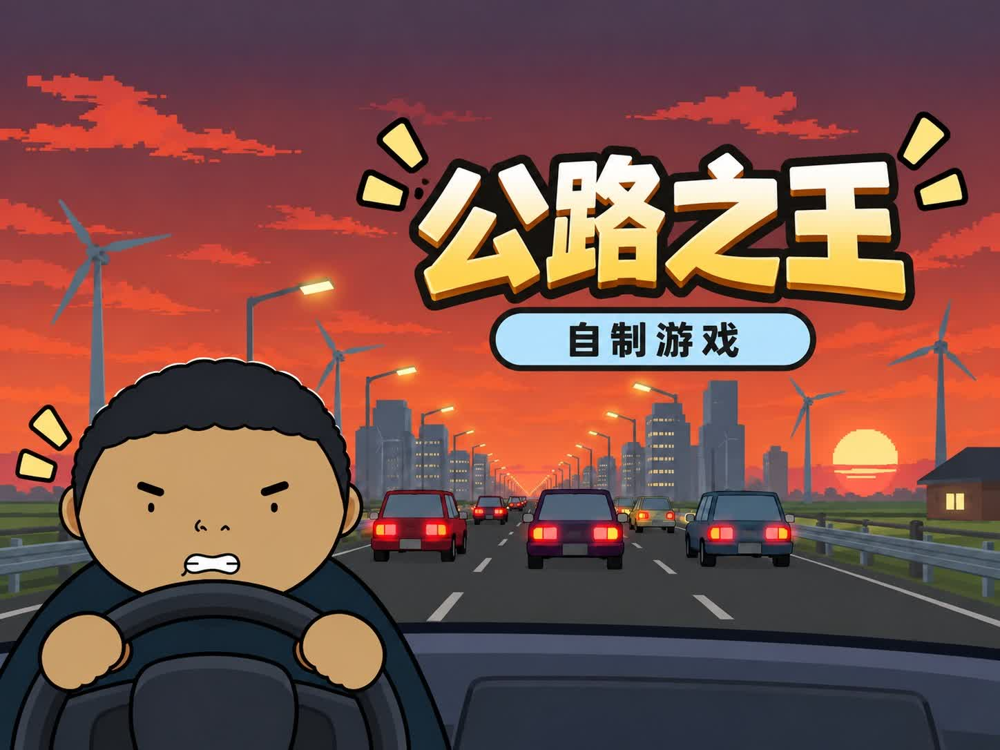
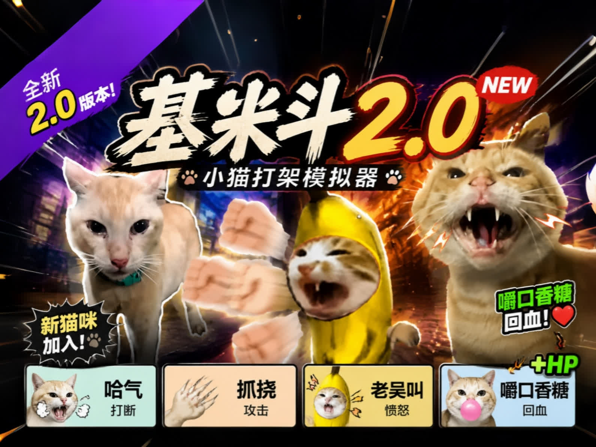

总是XX - 笔画变形图案
作者：Stand404 · 播放：358.4万 · ✅ 完整收录
99 个图案 SVG 全部内嵌在主脚本里，无缺失。 （无进度系统，无可破解项）

公路之王
作者：二二QvQ · 播放：264.6万 · ✅ 完整收录
抓取失败的 3 条均为代码里的噪声字符串，非真实资源。 （车辆与剧情默认全开放，无可破解项）
万梗捏 - 赛博捏捏乐
作者：扎克鸡 · 播放：224.3万 · ✅ 完整收录
失败条目均为噪声字符串；「万梗捏-邀请卡.jpg」是游戏运行时生成导出图的文件名模板，原站并无此文件。 🔓 本版已破解：全部梗 + 「超软」手感解锁。
火山游戏合集
作者：火山哥哥 · 播放：298.9万 · ✅ 完整收录
这是个游戏导航/合集页：它内部的游戏条目是链接到 B 站上其他 Toy 的，离线点不开；本页自身的界面与素材完整。页面字体走 Google Fonts，离线时以系统字体替代显示。 （链接目录，无可破解项）
大狗大狗叫叫叫
作者：马克杯MarkCup · 播放：921.6万 · ✅ 完整收录
抓取失败的 2 条均为噪声字符串。 🔓 本版已破解：投币音效与哈基米帝皇皮肤已解锁。
鲸鱼娘养成计划
作者：Anria_ · 播放：83.8万 · ⚠️ 部分收录
主体完整（全部程序模块、剧情图、UI 均已抓齐）；第一轮因编码问题漏抓的 47 个中文文件名资源已补回 40 个，其余 7 个在原站即返回 404（其中 4 个语音在 resource/sound/voice/ 下有同名文件已收录，实际缺失为 3 个根目录图片/文本）；另有少量游戏运行时拼路径的可选资源原站亦不存在。 🔓 本版已破解：全功能/时装解锁 + 初始资金拉满。

基米斗模拟器2.0 [新版]
作者：洪山桥小老板 · 播放：100.8万 · ✅ 完整收录
已补全（上一轮被 B 站风控中断的部分已续抓）：5 只猫 × 7 帧动画图、14 个中文文件名音效/音乐、装饰图全部到齐。 🔓 本版已破解：全部小猫解锁。
合成小潮team
作者：神威小夜刀 · 播放：27.3万 · ⚠️ 部分收录
场景、界面、全部 5 个音频、80 张纹理中的 72 张已抓齐；1 个资源包文件（res/import/0b/0b07e7e0f.json，含部分材质与结算面板预制体数据）在原站即返回 404，另有 8 张纹理图和 2 个引擎默认资源原站缺失，个别界面元素可能显示不全。 🔓 本版已破解：得分加成×100 + 全档水果 + 金币拉满。